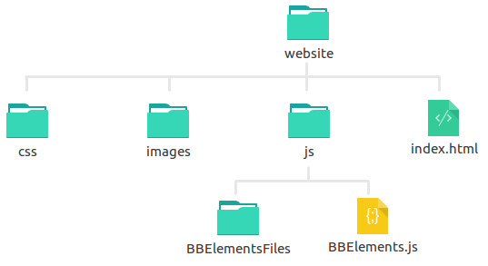

BBElements.js
documentation page
BBElements.js is a front-end JavaScript library for using custom HTML elements that conform to the Branger_Briz brand. The source code can be found at BBElements GitHub Repo. The library uses the webcomponents polyfill as well as the Polymer library for creating the actual custom elements. The BBElements.js library itself handles the following:
- conditionally loads polyfill
- lazy loads Polymer
- lazy loads BB fonts CSS
- conditionally loads highlightJS ( for
<bb-code>)
- lazy loads elements ( all or from a custom list )
- alternativly, can load a vulcanized elements html file
- provides optional loading helpers:
- display unresolved CSS on elements before they've finished loading ( removed after fully loaded )
- display loading screen with a progress bar
- handles some DOM manipulation related to marginal notes:
<bb-note>
Using the Library
the library files

This documentation page is an example of a website using the BBElements library. The library consists of the BBElements.js file and it's dependencies folder ( BBElementsFiles ). You can find these files here.
Both the js file and the dependencies folder must be kept inside a js/ folder kept along side the HTML file making use of the library.
load the library
In order to avoid FOUC include the library in the <head> of your HTML page:
<script src="js/BBElements.js"></script>
then right below that ( still in the <head> ) inside an empty pair of <script> tags you can choose one of two ways for loading the custom BB elements. The first method is to "lazy-load" the individual elements:
// load every BBElement by default
BBElements.lazyLoad();
// or you can specify which BBElements you want to load
// by passing in an array of the desired elements
BBElements.lazyLoad(['bb-logo','bb-h1','bb-p']);
The alternative method ( rather than lazy-loading the individual elements which in turn creates individual HTML imports for each element ) is to import a vulcanized file created with npm run vulcanize ( see dev section below for more details ) like this:
// this is the default path to the vulcanized file with all the BBElements
// but you could instead use a path to a custom made vulcanized file
BBElements.import('js/BBElementsFiles/vulcanized-elements.html');
optional methods
The page renders before the custom elements are fully loaded ( which creates a FOUC-ish messyness, as described here ). There are a couple of optional methods for handling this. The first is to load a temporary style sheet ( which approximates what the custom elements should look like once fully loaded ) which is later removed once the custom elements have fully loaded. To use this add the following below the call to .lazyLoad() or .import() inside the same script tag:
BBElements.usePlaceholderCSS();
Alternatively, you could also use a loading screen ( with a progress bar ) which fades out once all the custom elements have fully loaded. To use this create a new pair of <script> tags at the top of your <body> tag with the code below.
BBElements.useLoadingScreen();
Using the Elements
With the library loaded in the head along with a call to either .lazyLoad() or .import() you can then use any of the loaded BBElements in your html document just like you would any standard element. You can view this example page as a demo of all the elements in use ( except for <bb-post-summary>, you can find a demo of a bb-post-summary here ). Below is documentation of the BBElements included in the library.
<bb-container>
<bb-logo></bb-logo>
<bb-h1> New Code Demo </bb-h1>
<bb-p>
some information here
</bb-p>
<bb-code language="html" wrap>
some code here
</bb-code>
<bb-footer back-text="Back to Main Page" back-url="/index.html">
</bb-footer>
</bb-container>
Development Notes
Clone the repo git clone https://github.com/brangerbriz/BBElements.git.
Then make sure to npm install as well as bower install ( assuming you have npm and bower installed locally ). The package.json includes a few npm scripts ( which must be run from the root of the project ) detailed below.
The source code is found in the src folder. All the BBElements are in src/elements, the main library file is src/BBElements.js and it's dependencies are in src/js. Inside src/utils are a few dev utility scripts. There is an npm script to lint the srouce code:
npm run lint
The docs directory contains a .json document file per BBElement. This documentation page uses the data in those .json files to generate parts of this page. The .json files are auto-generated by docs/make.js which can be run with the following npm script:
npm run docs
src/utils/Vulcanize.js is used to to create a vulcanized file src/utils/vulcanized-elements.html, which is a single HTML import file for loading BBElements via .import('path/to/vulcanized-elements.html') rather than lazy-loading individual files for each BBElement via .lazyLoad(). There is an npm script for creating a the vulcanized-elements.html file.
npm run vulcanize
# you can also specify which elements to include in the vulcanized file
npm run vulcanize bb-p bb-h1 bb-h2
The build folder includes this documentation page, a few example files and a build/js folder, which is where the built library and it's dependencies are placed. There is an npm script used to build the library ( as well as collect all the libraries dependencies and copy them into build/js/BBElementsFiles ). The build process also lints and creates docs as well as creates a vulcanized file with all the elements in it by default.
npm run build
to watch changes to src/*.js
npm run watch